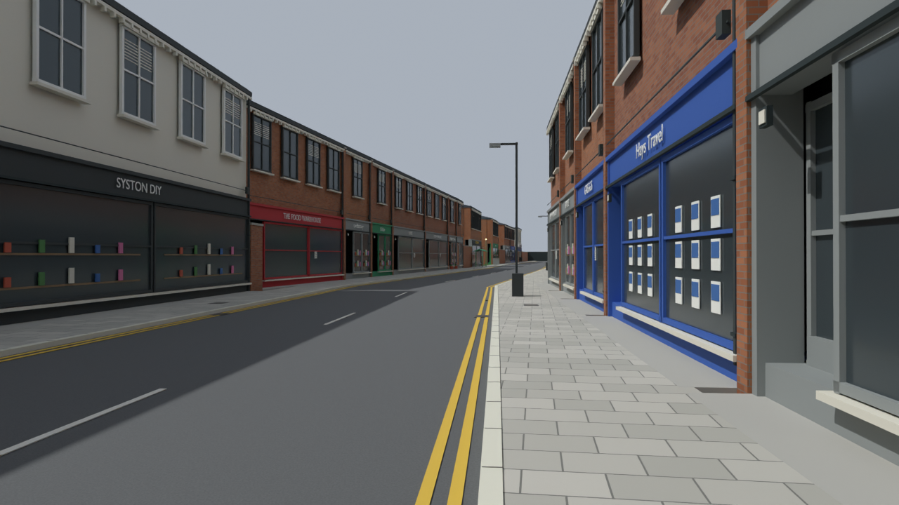
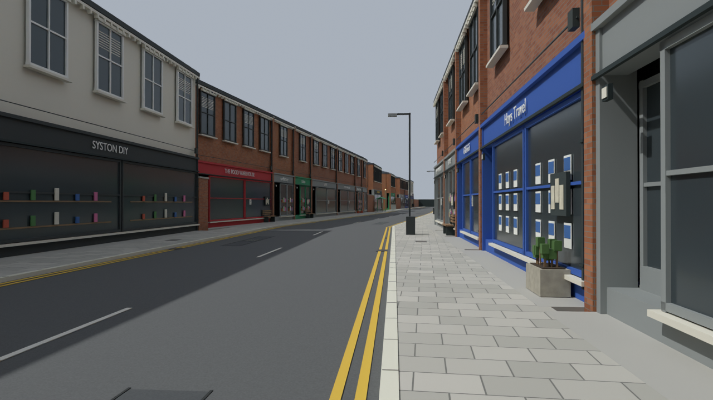
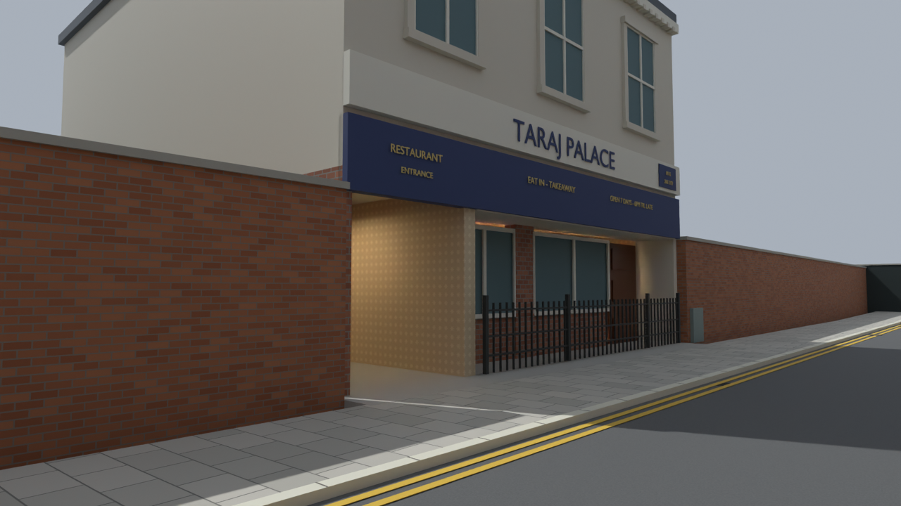
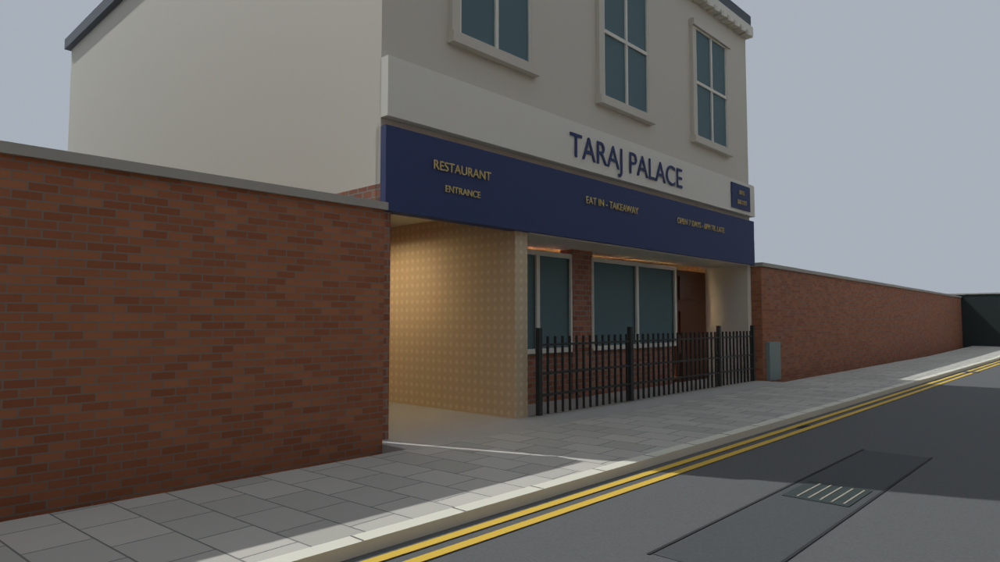

300 new solids: repaired road surfaces and inspection covers; timber benches, planters, bins and notices. Furniture sits beside selected shop fronts.
Blender only. Previous meshes and original photos preserved. Sampled road/pub routes pass; pavement circulation and BO3 gameplay remain unverified.



